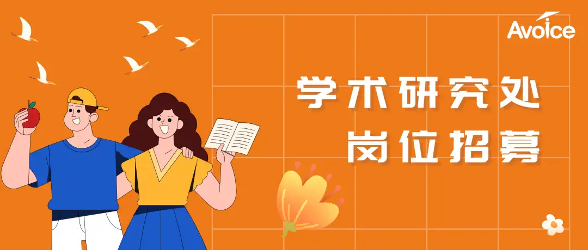
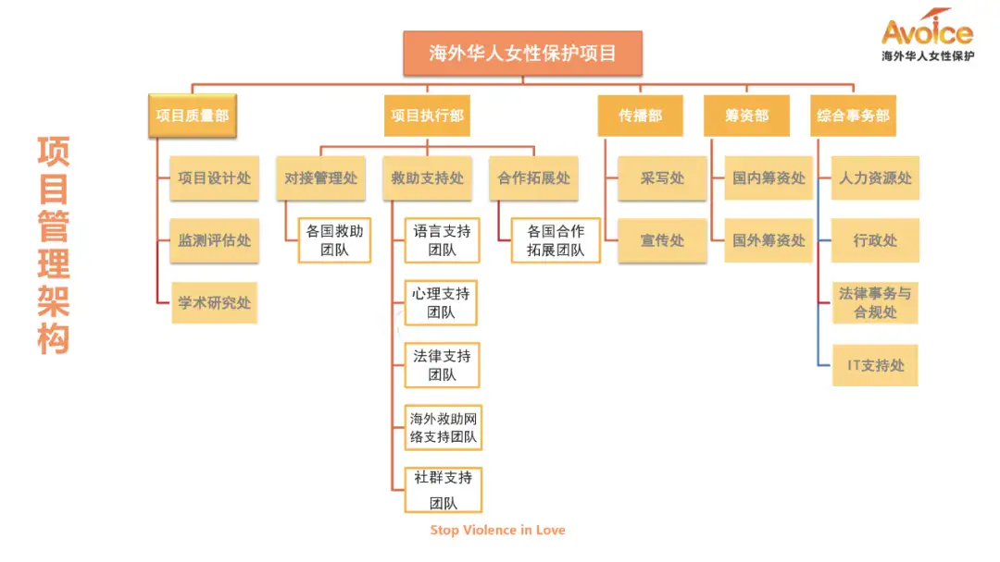
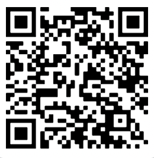

01 我们是谁
项目简介
Avoice 海外华人女性保护项目致力于消除性别暴力、促进性别平等，为面临家暴威胁的海外华侨华人女性提供充分、持续的保护和救助。项目通过与政府部门、海外华人组织、社会组织、行业专家等建立合作网络，联合更广泛的青年公益力量，倡导公众对海外华人女性生活困境的关注和支持，为她们创造安全、平等的生存和发展环境，帮助她们从家庭暴力的受害者，成长为推动性别平等与保护弱势群体的倡导者和实践者。
项目简称“Avoice”取自 Against Violence to Overseas Chinese Women Program (海外华人女性保护项目的英文名称），意为用女性之声传递发展愿景，用青年之声呼吁性别平等，以昭然赤心宣告人文理念，以不渝之志唱彻使命长歌，致力于将公益的万千发声汇入到全球推进性别平等可持续发展目标的万钧宏音中！
欢迎通过以下链接了解更多关于 Avoice 海外华人女性保护项目的信息：

“Avoice 项目”整体组织架构

02 岗位招募
1. 学术研究处成员（6-8名）
（滚动招募；简历投递截止日期：北京时间12月1日11:59pm）
职位描述：
参加海外华裔女性的生存和发展现状研究，搜索相关信息并撰写学术报告，可选方向：
海外华裔女性针对女性的暴力案件受害现状调查：1-2人。
华裔女性在海外职场生存现状调查：1-2人。
参与专门面向华裔女性的学术数据库建立：3人。
成员在参与以上三个项目的基础上，可根据自身情况决定是否参与：
"Avoice性别平等进展与海外亚裔发展"新闻评论月报撰写。
自主参与其他任务，或完成负责人布置的其他工作。
任职要求：
拥有较强的学习能力、抗压能力和 时间管理能力，按时保质完成交予的任务。
有责任心，善于小组合作，能够在高压环境下保持及时沟通。
优秀的英文阅读能力，擅于查阅外文文献资料，擅于中文研究报告和学术文章类的写作。
掌握基本的研究方法，拥有较高的数据采集和分析能力。
专业包括但不限于社会学、政治学、人类学、心理学与历史学，对家庭暴力、女性保护与发展，性别政治等问题有研究兴趣。
2. 学术顾问（长期招聘）
职位描述：
对学术处的研究报告选题、框架设计、内容撰写等给予专业指导。
与学术处负责人共同设计项目研究规划。
为项目参与外部学术交流活动提供咨询建议。
任职要求：
硕士及以上学位，或在相关领域有充沛学术与实践经验。
专业包括但不限于社会学、政治学、人类学、心理学与历史学。
拥有与家庭暴力、女性保护与发展，性别政治等方面研究的丰富经验。
工作态度严谨、认真、负责。
每个月有3-5小时时间为学术处提供咨询指导。
03 工作收获
志愿者/实习证明：依据 Avoice 章程，工作 6 个月以上可申请志愿者证书，工作满 1 年的成员可获得实习证明，工作优秀的成员可以参选季度和年度优秀志愿者。
能力提升&项目署名：学术报告、月报撰写，以及数据库建立的相关经验以及成果放到自己的简历中作为经历。工作经历有助于进行学术类，咨询类等求职。
Avoice 人际网络和专家网络：Avoice 志愿者和Alumni覆盖海内外各大高校（常春藤，G5，985/211 名校资源丰富），顾问均为资深公益，商业，科技圈人士，提供了高质量求学人际网络。
日常奖励： 对于工作认真负责，考核结果优异的成员，部门内部会提供相应的内部激励（包括但不限于奶茶、小奖品等等）。
得到项目专家顾问的指导和推荐信（工作满6个月以上，经过综合评估后可以申请推荐信）。
参加志愿者线上线下团建活动。
加入国际青年志愿者网络校友会。
项目合作伙伴的实习、活动内推。
参与性别平等、女性保护与发展、青年赋能等相关领域的课题研究。
与国内外公益机构、学术机构、基金会的合作交流机会。
与来自世界各地、志同道合的伙伴一起学习成长。
04 申请流程
学术研究处成员
1. 简历筛选-笔试-面试
2. 简历筛选：请勿在您投递的简历中附照片；请勿在简历中透露自己的具体年龄或出生年月日；请优先提交中文简历；简历提交一份即可，请勿提交中英互译或中英双份简历。简历投递截止日期：北京时间12月1日11:59pm。
3. 笔试：候选人需在收到笔试通知的邮件后，在邮件内标注的限定时间内完成笔试，由部门负责人进行审阅。
4. 面试：部门负责人将与通过笔试的候选人进行面试，最后根据面试结果决定是否录取。
5. 录取通知
6. 入职培训
学术顾问
1. 简历筛选-邀请评议文章-面试
2. 简历筛选：请勿在您投递的简历中附照片；请勿 在简历中透露自己的具体年龄或出生年月日；请优先提交中文简历；简历提交一份即可，请勿提交中英互译或中英双份简历。简历投递截止日期：长期开放。
3. 文章评议：通过简历筛选的候选人会通过邮件收到关于文章评议的邀请，请届时按照邮件中的要求进行评议和反馈。
4. 面试：部门负责人将与通过文章评议的候选人进行面试，最后根据面试结果决定是否录取。
5. 录取通知
6. 入职培训
05 简历提交通道

可扫描二维码或通过点击文章底部“阅读原文”提交简历。
06 联系方式
如对上述岗位有疑问，请通过电子邮件联系学术研究处：[email protected]
若申请过程中遇到问题，请通过电子邮件联系人力资源部：[email protected]
内容来源 I Avoice Team
排版、封面制作 I Zoey